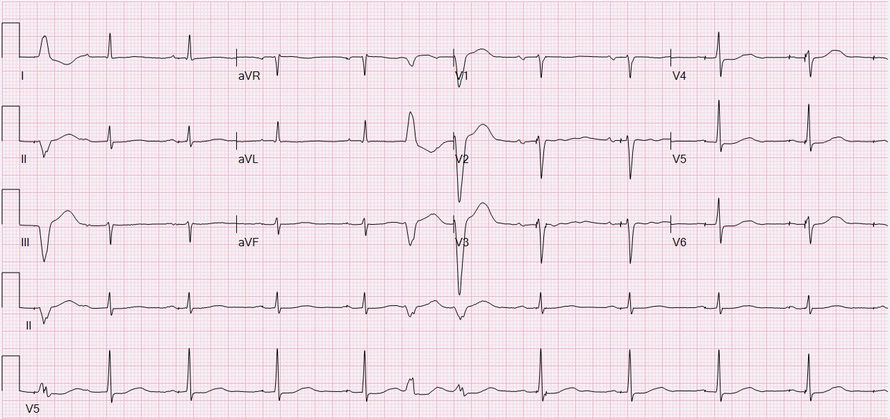
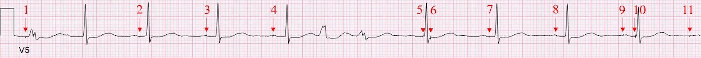
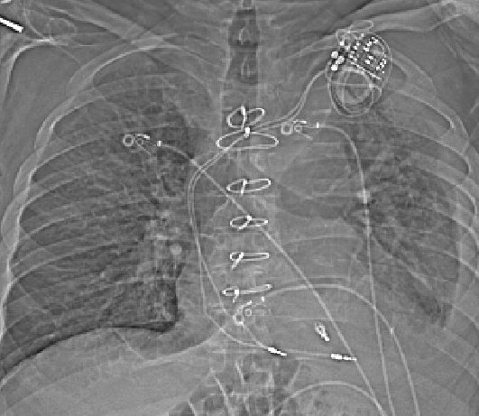
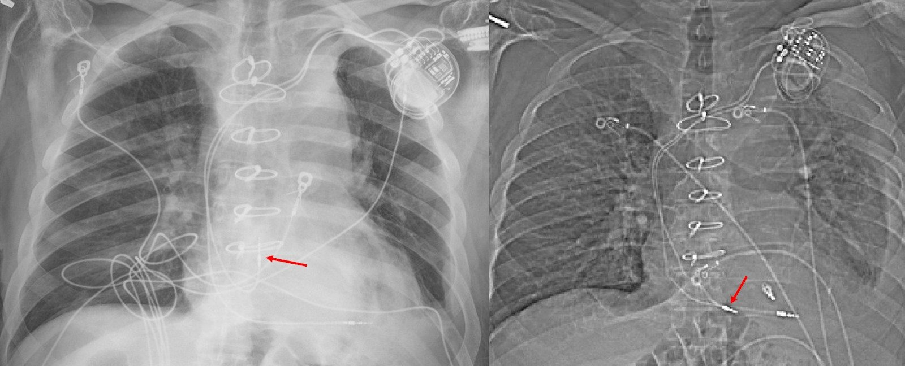
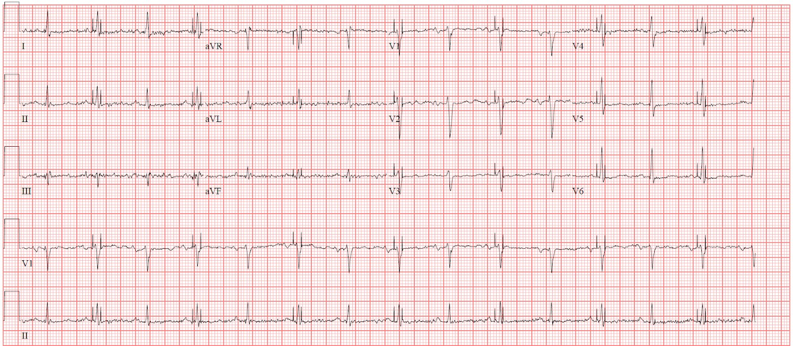
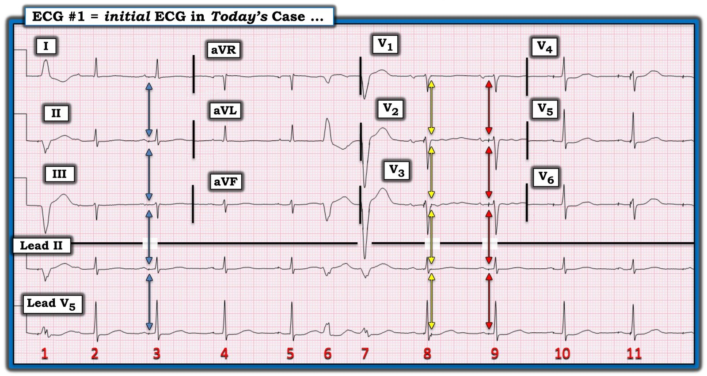

13/01/2024 — Hạ huyết áp tư thế đứng khởi phát sau thủ thuật xâm lấn?
Bản dịch tiếng Việt của bài "Orthostatic hypotension onset after invasive procedure?" – Dr. Smith’s ECG Blog. Giữ nguyên toàn bộ 8 hình ảnh của bản gốc.
Tác giả: Willy Frick
Một người đàn ông ngoài 70 tuổi, tiền sử suy tim phân suất tống máu giảm (HFrEF) và hội chứng suy nút xoang đã được đặt máy tạo nhịp hai buồng, được nhập viện theo dõi qua đêm sau thủ thuật kẹp van hai lá (mitral valve clip) thực hiện ngoại trú. Biên bản thủ thuật ghi nhận đặt kẹp không biến chứng. Sáng hôm sau, người ta ghi được điện tâm đồ dưới đây.


Bạn nghĩ gì?
Bản ghi cho thấy nhịp xoang kèm PVC và bất thường ST&T không đặc hiệu. Nhưng có một điều quan trọng hơn cần nhận ra, đó là các gai tạo nhịp. Chúng không hợp lý. Một số gai nằm giữa hoặc sau sóng P, thậm chí có một gai rơi vào cuối QRS! Dưới đây là dải nhịp V5 được phóng to, với các gai tạo nhịp được đánh số.


Chẳng hạn, so sánh các gai 2, 3, 4 và 5, ta thấy rất rõ ràng chúng đều xuất hiện ở những thời điểm khác nhau trong chu chuyển tim. Gai 2 xuất hiện ở cuối sóng P, gai 3 và 4 xuất hiện gần đỉnh sóng P, còn gai 5 xuất hiện ngay trước khởi đầu QRS. Đây là bằng chứng không thể nhầm lẫn về rối loạn chức năng máy tạo nhịp. Khi nói đến rối loạn chức năng, chúng ta thường xếp vào hai nhóm (dù còn những trục trặc khác có thể xảy ra với máy tạo nhịp).
“Mất nhận cảm” (failure to sense) xảy ra khi máy tạo nhịp không nhận biết đúng hoạt động tự nhiên của tim, dẫn đến thừa gai tạo nhịp. Hãy hình dung máy tạo nhịp được cài tần số tối thiểu là 60. Nếu máy không nhận cảm được nhịp tự nhiên (có thể do dây điện cực bị gãy hoặc di lệch), máy sẽ cố tạo nhịp ở tần số 60 nhịp/phút, điều này có thể gây ra những gai tạo nhịp không cần thiết, làm gián đoạn hoạt động bình thường của tim. Để so sánh, hãy hình dung một bộ cảm biến bị hỏng ở chỗ giao cắt đường sắt, không phát hiện được đoàn tàu đang lao tới, và vì vậy để barie mở, cho phép xe cộ chạy băng qua đường ray, lao vào đoàn tàu đang tới.
“Mất bắt nhịp” (failure to capture) xảy ra khi máy tạo nhịp phát ra xung nhưng xung đó không thực sự khử cực được cơ tim. Điều này có thể gây ra những khoảng ngưng không có nhịp tự nhiên và cũng không có nhịp tạo nhịp. Ở đây, hãy hình dung bạn đặt đồng hồ báo thức buổi sáng nhưng vặn âm lượng nhỏ hết mức. Chuông báo thức vẫn reo, nhưng bạn vẫn ngủ say không hay biết!
Dây điện cực nhĩ
Bản ghi này cho thấy rõ mất nhận cảm ở dây điện cực nhĩ. Các gai 2, 3, 4, 5, 7, 8 và 9 đều xuất hiện trong hoặc ngay sau sóng P, điều lẽ ra không bao giờ được xảy ra. Dây điện cực lẽ ra phải phát hiện được sóng P tự nhiên và ức chế tạo nhịp. Có thể có mất bắt nhịp, nhưng không thể chắc chắn vì mọi gai tạo nhịp đều xuất hiện vào lúc tâm nhĩ hoặc đang khử cực, hoặc vẫn còn trơ do lần khử cực trước đó.
Dây điện cực thất
Bản ghi này cũng có thể cho thấy mất nhận cảm ở dây điện cực thất. Gai 6 xuất hiện ở cuối QRS. Dây điện cực thất lẽ ra phải nhận cảm được phức bộ QRS tự nhiên và ức chế tạo nhịp, nhưng nó đã không làm vậy, và do đó đã tạo nhịp không thích hợp. (Với những người đam mê điện sinh lý, điều này thực ra có thể là do tạo nhịp an toàn thất (Ventricular Safety Pacing), vấn đề nằm ngoài phạm vi bài này.) Gai 10 thực ra cho thấy một phức bộ hỗn hợp giữa nhát tự nhiên và nhát tạo nhịp (thấy rõ nhất ở chuyển đạo V4 và V6), chứng tỏ dây điện cực này vẫn còn khả năng tạo nhịp.
Phát hiện rối loạn chức năng máy tạo nhịp mới xuất hiện sau một thủ thuật xâm lấn lẽ ra phải dẫn đến việc khảo sát ngay lập tức, nhưng nó đã không được để ý. Kết quả đọc lại (overread) cuối cùng của bác sĩ tim mạch là “Nhịp xoang với thỉnh thoảng có phức bộ tạo nhịp hai buồng AV và thỉnh thoảng có phức bộ ngoại tâm thu thất”, không có bình luận nào về rối loạn chức năng máy tạo nhịp.
Ca bệnh tiếp diễn…
Bệnh nhân được xuất viện vào buổi sáng hôm sau thủ thuật. Tối hôm đó khi về đến nhà, ông bị ngã bất ngờ lúc bước ra khỏi xe, huyết áp được ghi nhận là 88/53. Bệnh nhân và vợ nghĩ rằng điều này là do việc ngừng midodrine và fludrocortisone trong thời gian nằm viện làm thủ thuật. Ngày hôm sau ông lại bị một lần ngã không rõ nguyên nhân. Ông liên hệ phòng khám tim mạch, nói rằng mình cảm thấy “rất mệt, không còn chút sức lực nào” kể từ khi đặt kẹp.
Vài ngày sau đó, ông nhập viện vì một lý do không liên quan là nhiễm trùng ổ bụng. Vào ngày nhập viện, ông được chụp CT. Nhiễu cứng hóa chùm tia (beam hardening artifact) làm hạn chế khả năng đánh giá vị trí dây điện cực trên chính phim CT, nhưng ảnh định vị (scout image) được trình bày dưới đây:


Bạn nghĩ gì về máy tạo nhịp?
Hình ảnh này có vẻ cho thấy dây điện cực nhĩ đã di lệch vào tâm thất. Nếu còn nghi ngờ, hãy so sánh với một phim X-quang ngực cũ. Các mũi tên đỏ dưới đây chỉ vị trí dây điện cực nhĩ.


Rõ ràng dây điện cực nhĩ đã bị bật ra khỏi vị trí. Trên phim X-quang cũ ở bên trái, dây điện cực có vẻ kết thúc bên trong tâm nhĩ. Trên hình mới ở bên phải, dây không còn uốn ngược lên trong tâm nhĩ nữa mà tiếp tục đi xa hơn vào van ba lá hoặc tâm thất. Bác sĩ chẩn đoán hình ảnh không bình luận gì về điều này. Điện tâm đồ ghi lại tại khoa cấp cứu được trình bày dưới đây.


Bản ghi này cho thấy nhịp xoang tần số 87. Thỉnh thoảng có gai tạo nhịp, nhưng chúng không gây ra bất kỳ sự khử cực nào. Chúng không thể gây khử cực nhĩ (vì chúng xuất hiện sau sóng P), và cũng không thể gây khử cực thất vì mọi phức bộ QRS đều giống hệt nhau.
Kết quả đọc lại của bác sĩ tim mạch là “Nhịp tạo nhịp thất theo nhận cảm nhĩ. Có một số chỗ mất nhận cảm sóng P, xem chuyển đạo V1 V2 V3.” Kết quả đọc điện tâm đồ còn ghi “Đề nghị kiểm tra máy tạo nhịp để đánh giá nhận cảm nhĩ.”
Ca bệnh tiếp diễn…
Vài ngày sau khi nhập viện, trong lúc tập vật lý trị liệu, bệnh nhân bị tiền ngất. Ghi chép của kỹ thuật viên vật lý trị liệu mô tả nhịp tim của bệnh nhân trên monitor không đều, “dao động từ cực kỳ nhanh đến khoảng 30” và khi bắt mạch thì “không đều, có khoảng ngưng”. Khoa tim mạch được mời hội chẩn, và ghi chép hội chẩn viết “không có rối loạn nhịp trên theo dõi từ xa (telemetry) hay khi kiểm tra máy tạo nhịp”. Khuyến cáo cuối cùng của khoa tim mạch là tăng liều fludrocortisone và midodrine.
Vài ngày sau, midodrine và fludrocortisone bị ngừng do tăng huyết áp và bệnh nhân được xuất viện. Một tuần sau khi xuất viện, bệnh nhân lại bị ngã, huyết áp được ghi nhận là 73/62. Bệnh nhân được dặn dùng lại midodrine và fludrocortisone.
Trong vài tuần tiếp theo, bệnh nhân tiếp tục than choáng váng vài lần mỗi tuần. Ông được tái khám định kỳ sau kẹp van hai lá khoảng 1 tháng sau thủ thuật, và ghi chép lần khám đó cho thấy đã nhận ra dây điện cực nhĩ bị bật khỏi vị trí trên phim CT của lần nằm viện vài tuần trước.
Máy tạo nhịp của ông được chuyển sang VVI 50. Chế độ này có nghĩa là máy tạo nhịp vô hiệu hóa hoàn toàn dây điện cực nhĩ và chỉ dùng dây điện cực thất. Nếu tần số thất giảm dưới 50, bệnh nhân sẽ được tạo nhịp dự phòng ở thất với tần số 50. Nếu tần số thất tự nhiên vượt quá 50, máy sẽ không tạo nhịp. Sau đó, ông không còn bị choáng váng hay ngã nữa. Cuối cùng, dây điện cực nhĩ đã được chỉnh sửa lại.
Tóm lại:
Bệnh nhân đã trải qua một thủ thuật xâm lấn (kẹp van hai lá) đòi hỏi phải đi qua nhĩ phải và vách liên nhĩ. Có vẻ như trong thủ thuật này, dây điện cực nhĩ của ông đã vô tình bị bật ra khỏi vị trí. Ngày hôm sau, ông có bằng chứng rõ ràng trên điện tâm đồ về rối loạn chức năng máy tạo nhịp nhưng không được nhận ra. Ông bị nhịp chậm có triệu chứng và các lần ngã trong hơn một tháng, và đã được một bác sĩ tim mạch khác khám riêng vì tiền ngất, nhưng vấn đề vẫn không được nhận ra mặc dù vẫn liên tục có bằng chứng trên điện tâm đồ về rối loạn chức năng máy tạo nhịp, cùng hình ảnh học chứng minh dây điện cực bị bật khỏi vị trí.
Vì các cơn có triệu chứng của ông không được ghi lại trên điện tâm đồ nên chúng ta chỉ có thể đoán máy tạo nhịp đã hoạt động thế nào vào những lúc đó. Do ông mang thiết bị hai buồng, tần số thất của ông lẽ ra không giảm dưới giới hạn tần số thấp nhất (thường là 50 hoặc 60). Tuy nhiên, rối loạn chức năng dây điện cực nhĩ có thể đã dẫn đến mất đồng bộ nhĩ-thất (AV dyssynchrony), tình trạng mà ông đặc biệt dung nạp kém do bệnh nền HFrEF. Điều này được củng cố bởi ghi chép của kỹ thuật viên vật lý trị liệu, mô tả mạch bắt được không đều, có khoảng ngưng và nhịp chậm rõ rệt.
Ông có thể đã bị nhĩ và thất co bóp đồng thời, gây ra sóng A đại bác (cannon A waves), hậu quả là giảm cung lượng tim. Khi chuyển sang chế độ VVI, khả năng nhĩ và thất co bóp đồng thời sẽ thấp hơn nhiều. Triệu chứng của ông bắt đầu vào ngày sau khi dây điện cực nhĩ bị bật khỏi vị trí, và hết khi dây điện cực nhĩ bị vô hiệu hóa.
Những điểm cần học:
- Hãy xem xét các gai tạo nhịp trên điện tâm đồ để kiểm chứng rằng chúng hợp lý. Máy điện tâm đồ đặc biệt kém trong phân tích nhịp phức tạp và rối loạn chức năng máy tạo nhịp.
- Ở bệnh nhân có máy tạo nhịp, phim X-quang ngực chứa rất nhiều thông tin (cấu hình dây điện cực, loại thiết bị là máy tạo nhịp vĩnh viễn (PPM) hay ICD, vị trí và tình trạng bật khỏi vị trí)
- Hạ huyết áp tư thế đứng là nguyên nhân thường gặp của ngất, nhưng không phải là nguyên nhân duy nhất gây ngất, và cần loại trừ đầy đủ các nguyên nhân khác.
- “Mất nhận cảm” có thể dẫn đến tạo nhịp quá mức.
- “Mất bắt nhịp” có thể dẫn đến những khoảng ngưng không thích hợp mà không có tạo nhịp.

===================================
BÌNH LUẬN CỦA TÔI, bởi KEN GRAUER, MD (13/1/2024):
===================================
Đã bao giờ BẠN tự hỏi khi nhìn một điện tâm đồ — “Bệnh nhân này có Máy tạo nhịp không?”
- Chúng ta không phải lúc nào cũng được cung cấp thông tin về việc bệnh nhân có điện tâm đồ mà ta đang xem có máy tạo nhịp hay không. Đôi khi, nhìn vào điện tâm đồ được đưa, ta thấy ngay rằng có gai máy tạo nhịp với nhận cảm và bắt nhịp thích hợp. Nhưng những lúc khác — Đã bao giờ BẠN tự hỏi?
- Chúng ta không phải lúc nào cũng may mắn nhận được một bản ghi chất lượng cao (như trong ca hôm nay). Và điện tâm đồ được đưa cho ta thường không về cơ bản sạch nhiễu (như điện tâm đồ đúng là sạch nhiễu trong ca hôm nay).
- Chúng ta thường không có điện tâm đồ nền để so sánh.
- Và, cài đặt bộ lọc tối ưu để phát hiện gai máy tạo nhịp thường không được chọn (và việc ghi chú cài đặt bộ lọc nào đã được dùng thường không có trong ảnh điện tâm đồ được gửi qua internet).
Về bản ghi hôm nay:
Để rõ ràng, ở Hình 1 — tôi đã sao lại và đánh dấu điện tâm đồ ban đầu trong ca hôm nay. Khi lần đầu nhìn thấy bản ghi này — phải thừa nhận là tôi không biết chắc chuyện gì đang xảy ra.
- Việc được cho biết bệnh nhân này có máy tạo nhịp — đã giúp ích rất nhiều trong việc thuyết phục tôi rằng (đúng như Dr. Frick nhận định) — có nhiều gai tạo nhịp nhĩ xuất hiện ở mọi thời điểm trong chu chuyển tim, không có liên quan rõ ràng với thời điểm của các phức bộ QRS dẫn truyền từ xoang.
- Điểm MẤU CHỐT: Biên độ của nhiều gai tạo nhịp nhĩ này rất nhỏ — và có thể dễ dàng bị bỏ sót nếu việc theo dõi điện tâm đồ chỉ giới hạn ở một dải nhịp một chuyển đạo, ví dụ như của chuyển đạo V1! (Lưu ý từ các mũi tên hai đầu màu VÀNG và ĐỎ xuất hiện đồng thời trong Hình 1 — rằng hoàn toàn không có dấu hiệu nào cho thấy các gai tạo nhịp nhĩ thấy ở chuyển đạo V5 tạo ra một gai ở chuyển đạo V1).
- Ngay cả ở chuyển đạo II (cùng với chuyển đạo V1, thường được xem là các chuyển đạo tốt nhất để quan sát hoạt động nhĩ) — mũi tên hai đầu màu VÀNG ở chuyển đạo V5, vốn xác định rõ một gai tạo nhịp nhĩ ngay sau QRS của nhát #8 — lại không cho thấy dấu hiệu nào của gai tạo nhịp nhĩ trên dải nhịp chuyển đạo II dài được ghi đồng thời.
- Dải nhịp chuyển đạo II dài trong ca hôm nay có cho thấy dấu hiệu tạo nhịp nhĩ ở những chỗ khác — nhưng chẳng phải biên độ của các gai tạo nhịp nhĩ này trên chuyển đạo II dài rất nhỏ sao? BẠN có thực sự nghĩ mình sẽ nhận ra được những gai tạo nhịp nhĩ nhỏ xíu này NẾU: i) Bạn không được cho biết bệnh nhân có máy tạo nhịp? — ii) Bạn không có bản ghi nền? — và — iii) Điện tâm đồ bạn nhận được là ảnh chụp bằng điện thoại thông minh từ một bệnh nhân có cử động và/hoặc nhiễu đường nền ở một mức độ nhất định?


==============================
Còn CÀI ĐẶT BỘ LỌC thì sao?
Chúng tôi thỉnh thoảng đề cập đến các khái niệm cơ bản về ảnh hưởng mà cài đặt bộ lọc có thể gây ra trên điện tâm đồ trong một số tình huống lâm sàng nhất định. Tôi đã ôn lại các khái niệm liên quan đến ca hôm nay trong Bình luận của tôi ở cuối trang của bài đăng ngày 4 tháng Ba năm 2019 trên Dr. Smith’s ECG Blog — mà tôi trích dẫn dưới đây:
- Các cài đặt khác nhau thường được dùng khi ghi điện tâm đồ, tùy theo việc chú trọng vào xác định nhịp hay chẩn đoán (trong đó chẩn đoán tập trung vào việc đọc các dạng sóng của 12 chuyển đạo).
- Mức lọc mạnh hơn thường được dùng ở chế độ theo dõi, với thiết lập tần số thường dùng là trong khoảng 0.5 Hz đến 40 Hz (Hz = Hertz). Cách làm này có ưu điểm là giảm thiểu nhiễu và trôi đường nền vốn có thể ảnh hưởng đến việc đọc nhịp.
- Điểm MẤU CHỐT: Vì gai tạo nhịp có xu hướng là tín hiệu tần số cao — chúng thường bị lọc bỏ một cách hiệu quả bởi thiết lập chế độ theo dõi 0.5 đến 40 Hz. Khi dùng thiết lập bộ lọc này — gai tạo nhịp có thể đơn giản là không thấy được trên điện tâm đồ (tức là, trong những trường hợp như vậy, tạo nhịp thất có thể dễ bị chẩn đoán nhầm thành LBBB hoặc AIVR — Johnson Francis, 2017).
- Trái với chế độ theo dõi — dải thông rộng hơn (thường từ 0.05 Hz đến 150 Hz) được khuyến cáo cho chế độ chẩn đoán, trong đó chú trọng vào việc phân tích đoạn ST với độ chính xác tối ưu.
Ví dụ — hãy hình dung bạn đang xem một điện tâm đồ 12 chuyển đạo có ghi “40 Hz” là thiết lập tần số ở phía dưới bản ghi. Giá trị 40 Hz này thể hiện cài đặt bộ lọc thông THẤP (tức là, cho phép các tín hiệu có tần số THẤP HƠN giá trị này đi qua) — mà không đề cập đến giới hạn bộ lọc thông CAO. Nếu cài đặt bộ lọc thông CAO (tức là, cho phép các tín hiệu có tần số CAO HƠN giá trị này đi qua) là mức thường dùng khi theo dõi (tức là, 0.5 thay vì 0.05 Hz) — thì thiết lập bộ lọc 0.5 đến 40 Hz này có thể góp phần làm biến dạng sóng ST-T và/hoặc tạo hình ảnh giả ST chênh lên, trong khi thực tế không có. Những thay đổi khác ở các chi tiết tinh tế về hình dạng sóng Q, phức bộ QRS và sóng ST-T cũng có thể phát sinh do dùng dải lọc quá hẹp này.
- Thiết lập tần số được khuyến cáo chung cho việc đọc điện tâm đồ ở người lớn trong Chế độ Chẩn đoán Điện tâm đồ 12 Chuyển đạo là 0.05 đến 150 Hz. Có thể dùng giới hạn tần số trên còn cao hơn nữa ở trẻ nhũ nhi hoặc trẻ nhỏ. Nếu nhiễu cơ nặng, có thể cần thỏa hiệp bằng một dải thiết lập hẹp hơn là 0.05 đến 100 Hz (hoặc 0.05 đến 40 Hz) — nhưng nên thử dải được khuyến cáo 0.05 đến 150 Hz trước.
- Điểm MẤU CHỐT : Nếu cần thỏa hiệp trong cài đặt bộ lọc, thì ít nhất cũng cần nhận thức được rằng độ trung thực khi phân tích đoạn ST có thể kém tối ưu. Điều này giải thích vì sao không nên dùng các dải nhịp của chuyển đạo theo dõi để phân tích đoạn ST. Ta có thể được cảnh báo về khả năng (hoặc thậm chí nhiều khả năng) có ST chênh lên hoặc chênh xuống dựa trên những thay đổi thấy trên dải nhịp — nhưng khi điều đó quan trọng về mặt lâm sàng — điều này phải luôn luôn được xác nhận trên bản ghi 12 chuyển đạo.
====================
Để so sánh (vẫn từ bài đăng ngày 4 tháng Ba năm 2019) — tôi đã đặt dải theo dõi 2 chuyển đạo của bệnh nhân trong ca đó — cùng với điện tâm đồ 12 chuyển đạo được ghi đồng thời (Hình 2). Đáng tiếc là các thông số theo dõi cụ thể (bao gồm cả thiết lập tần số bộ lọc) đã bị cắt khỏi bản ghi 12 chuyển đạo.
- Nhằm mục đích minh họa — tôi đã tự ý thêm vào dải tần số bộ lọc tối ưu cho điện tâm đồ 12 chuyển đạo (tức là, 0.05 đến 150 Hz) — tốc độ giấy chuẩn ở Hoa Kỳ (tức là, 25 mm/giây) — và hiệu chuẩn điện thế chuẩn (tức là, 10 mm/mV).
- Hãy lưu ý sự thay đổi cài đặt bộ lọc (có lẽ từ 0.05-40 Hz ở các chuyển đạo theo dõi PHÍA TRÊN trong Hình 2 — sang 0.05-150 Hz ở điện tâm đồ 12 chuyển đạo ghi đồng thời) — đã làm thay đổi đáng kể mức ST chênh lên ở các chuyển đạo trước ngực! Cách duy nhất để xác định ST chênh lên hoặc chênh xuống trên một chuyển đạo theo dõi có thật hay không — là ngay lập tức ghi một điện tâm đồ 12 chuyển đạo.
- Điểm MẤU CHỐT: Hãy xem xét nhiễu đặc biệt nổi bật ở chuyển đạo V2 của Hình 2 — nhưng cũng hiện diện với biên độ thấp hơn ở hầu như tất cả các chuyển đạo chi. BẠN có thể nhìn thấy các gai tạo nhịp nhĩ biên độ thấp không nếu nhiễu tương tự hiện diện ở tất cả các chuyển đạo trên bản ghi?

====================
GỢI Ý: Nếu trước đây bạn chưa để ý đến cài đặt bộ lọc — Hãy bắt đầu tìm chúng! Thông thường chúng được ghi bên dưới điện tâm đồ (tương tự như cách chúng xuất hiện ở bản ghi 12 chuyển đạo trong Hình 2).
- Thú nhận: Tôi hoàn toàn thừa nhận rằng tôi đã trải qua nhiều năm trong sự nghiệp của một “người đam mê điện tâm đồ” rồi mới thực sự bắt đầu chú ý đến các cài đặt này. Điều này thực sự quan trọng — vì việc dùng một cài đặt bộ lọc khác có thể là lý do khiến độ lệch đoạn ST (chênh lên hoặc chênh xuống) tạo ra ấn tượng sai lầm về sự khác biệt trong mức ST chênh lên hoặc chênh xuống giữa các điện tâm đồ liên tiếp ghi trên cùng một bệnh nhân!
- Trong CA hôm nay: Một cài đặt bộ lọc thông thấp thấp hơn đáng kể so với 150 Hz có thể khiến hoàn toàn không thấy được gai tạo nhịp trên điện tâm đồ.
- T.B. (P.S.): Để xem một ví dụ khác về việc chọn cài đặt bộ lọc tối ưu — Xem phần Bình luận của tôi ở cuối trang của bài đăng ngày 3 tháng Sáu năm 2023 trên Dr. Smith’s ECG Blog — trong đó tôi minh họa ảnh hưởng của cài đặt bộ lọc đối với việc phát hiện sóng epsilon ở một bệnh nhân bị ARVC/D (bệnh cơ tim-loạn sản thất phải gây loạn nhịp (Arrhythmogenic Right Ventricular Cardiomyopathy-Dysplasia)).